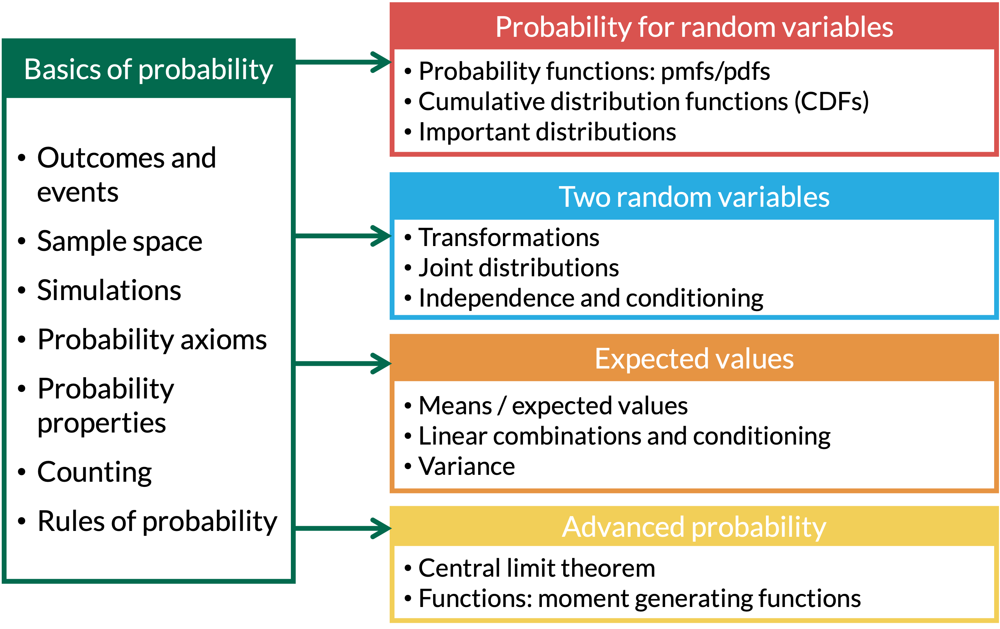
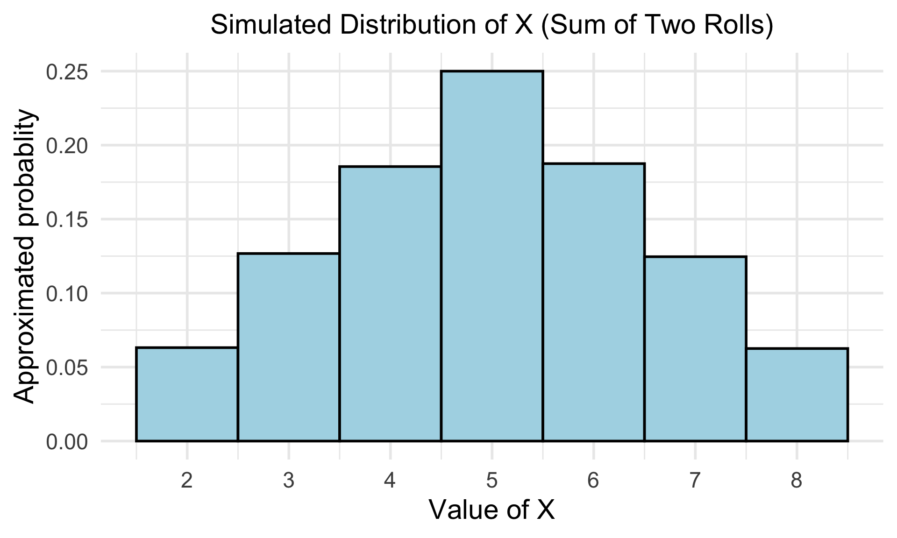

2025-10-20

There are two types of random variables:
Discrete random variables (RVs): the set of possible values is either finite or can be put into a countably infinite list
You could theoretically list the specific possible outcomes that the variable can take
If you sum the rolls of three dice, you must get a whole number. For example, you can’t get any number between 3 and 4.
Continuous random variables (RVs): take on values from continuous intervals, or unions of continuous intervals
Variable takes on a range of values, but there are infinitely possible values within the range
If you keep track of the time you sleep, you can sleep for 8 hours or 7.9 hours or 7.99 hours or 7.999 hours …
Definition: probability distribution or probability mass function (pmf)
The probability distribution or probability mass function (pmf) of a discrete r.v. \(X\) is defined for every number \(x\) by \[p_X(x) = \mathbb{P}(X=x) = \mathbb{P}(\mathrm{all }\ \omega\in S:X(\omega) = x)\]
Example: Simulating Two Rolls of a Fair Four-Sided Die
We’re going to roll two four-sided die. Let \(X\) be the sum of two rolls. How would we simulate \(X\)?
[,1] [,2] [,3] [,4] [,5] [,6] [,7] [,8] [,9] [,10] [,11] [,12] [,13] [,14]
[1,] 3 2 1 1 1 3 3 4 1 4 4 2 3 3
[2,] 4 2 2 3 4 1 4 2 1 1 4 4 3 3X_df <- as.data.frame(X_simulated) %>%
rename(X = X_simulated)
ggplot(X_df, aes(x = X, after_stat(density))) +
geom_histogram(binwidth = 1, color = "black", fill = "lightblue") +
scale_x_continuous(breaks = seq(2, 8, by = 1)) +
labs(title = "Simulated Distribution of X (Sum of Two Rolls)",
x = "Value of X",
y = "Approximated probablity")
Properties of pmf
A pmf \(p_X(x)\) must satisfy the following properties:
\(0 \leq p_X(x) \leq 1\) for all \(x\)
\(\sum \limits_{\{all\ x\}}p_X(x)=1\)
Some distributions depend on parameters
Each value of a parameter gives a different pmf
In previous example, the number of dice rolled was a parameter
We rolled 2 dice
If we rolled 4 dice, we’d get a different pmf!
The collection of all pmf’s for different values of the parameters is called a family of pmf’s
Binomial random variable
\(X\) is a binomial random variable if it represents the number of successes in \(n\) independent replications (or trials) of an experiment where
A binomial random variable takes on values \(0, 1, 2, \dots, n\).
If a r.v. \(X\) is modeled by a Binomial distribution, then we write in shorthand \(X \sim \text{Binom}(n,p)\)
Quick example: The number of heads in 3 tosses of a fair coin is a binomial random variable with parameters \(n = 3\) and \(p = 0.5\).
Distribution (or pmf) of a Binomial random variable
Let \(X\) be the total number of successes in \(n\) independent trials, each with probability \(p\) of a success. Then probability of observing exactly \(k\) successes in \(n\) independent trials is
\[P(X = x) = \binom{n}{x} p^x (1-p)^{n-x}, x= 0, 1, 2, \dots, n \]
R commands with their input and output:
| R code | What does it return? |
|---|---|
rbinom() |
returns sample of random variables with specified binomial distribution |
dbinom() |
returns probability of getting certain number of successes |
pbinom() |
returns cumulative probability of getting certain number or less successes |
qbinom() |
returns number of successes corresponding to desired quantile |
Example 1: Falls in Older Adults
A major public health concern is falls among older adults (age 65+). National data suggests that 25% of older adults will experience at least one fall within a given year. A community health program is tracking a random group of \(n = 8\) older adults for one year. Assume the likelihood of falling is independent from person to person.
Let \(X\) be the random variable representing the number of individuals in this group who experience at least one fall.
Example 1: Falls in Older Adults
Example 1: Falls in Older Adults
\[P(X = x) = \binom{n}{x} p^x (1-p)^{n-x}, x= 0, 1, 2, \dots, n \]
Example 1: Falls in Older Adults
Example 1: Falls in Older Adults
Example 1: Falls in Older Adults
Lesson 7 Slides